Irradiance Map
Irradiance Map Overview
This section allows the user to control and fine-tune various aspects of the irradiance map. This section is enabled only when the irradiance map is chosen as the GI method for primary diffuse bounces.
Some background for understanding how the irradiance map works is necessary in order to grasp the meaning of these parameters.
Irradiance is a function defined for any point in the 3D space and represents the light arriving at this point from all possible directions. In general, irradiance is different in every point and in every direction. However, there are two useful restrictions that can be made. The first is the surface irradiance - which is the irradiance arriving at points which lie on the surface of objects in the scene. This is a natural restriction since we are usually interested in the illumination of objects in the scene, and objects are usually defined through their surface. The second restriction is that of diffuse surface irradiance - which is the total amount of light arriving at a given surface point, disregarding the direction from which it comes.
In more simple terms, one can think of the diffuse surface irradiance as being the visible color of a surface, if we assume that its material is purely white and diffuse.
In V-Ray, the term irradiance map refers to a method of efficiently computing the diffuse surface irradiance for objects in the scene. Since not all parts of the scene have the same detail in indirect illumination, it makes sense to compute GI more accurately in the important parts (e.g. where objects are close to each other, or in places with sharp GI shadows), and less accurately in uninteresting parts (e.g. large uniformly lit areas). The irradiance map is therefore built adaptively. This is done by rendering the image several times (each rendering is called a pass) with the rendering resolution being doubled with each pass. The idea is to start with a low resolution (say a quarter of the resolution of the final image) and work up to the final image resolution.
The irradiance map is in fact a collection of points in 3d space (a point cloud) along with the computed indirect illumination at those points. When an object is hit during a GI pass, V-Ray looks into the irradiance map to see if there are any points similar in position and orientation to the current one. From those already computed points, V-Ray can extract various information (i.e. if there are any objects close by, how fast the indirect illumination is varying, etc.). Based on that information, V-Ray decides if the indirect illumination for the current point can be adequately interpolated from the points already in the irradiance map, or not. If not, the indirect illumination for the current point is computed, and that point is stored in the irradiance map. During the actual rendering, V-Ray uses a sophisticated interpolation method to derive an approximation of the irradiance for all surfaces in the scene.
The following diagram shows the way the Irradiance map is generated. Since the method is view-dependent the first rays (Black) are traced from the camera into the scene in order to determine the placement of the irradiance samples. Once this is done GI rays (Red) are traced from the samples into the scene in order to determine the illumination coming from the environment. The number of traced rays is determined by the HSph. subdivs parameter. The irradiance map only traces one bounce of light. All additional bounces (Blue) are traced from the secondary engine. The irradiance map is created on several passes - each pass adding more samples where this is needed. During rendering, for each rendered point, V-Ray takes several samples from the already complete Irradiance map and interpolates between them in order to create a smooth GI solution. The number of samples taken is determined by the Interpolation samples parameter.
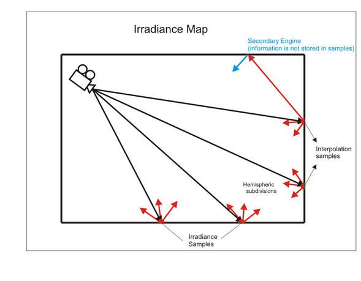
Built-in Presets
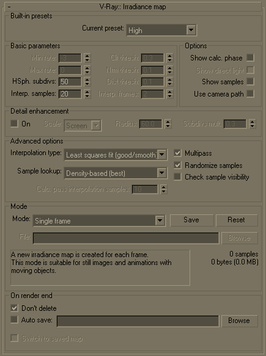
Current preset - this drop down list allows you to choose from several presets for some of the irradiance map parameters. You can use these to quickly set the color, normal, and distance thresholds, as well as the min/max rates. The following presets are available:
-
Very low - this preset is only useful for preview purposes to show the general lighting in the scene.
-
Low - a low-quality preset for preview purposes
-
Medium - a medium quality preset; works fine in many situations in scenes which have don't small details.
-
Medium animation - a medium quality preset targeted at reducing flickering in animations - the Distance threshold is higher.
-
High - a high-quality preset that works in most situations, even for scenes with small details as well as for most animations.
-
High animation - a high-quality preset that can be used if the High preset produces flickering in animations - the Distance threshold is higher.
-
Very high - a very high quality preset; can be used for scenes with extremely small and intricate details.
Note that the presets are targeted for a typical 640x480 image. Larger images usually can do with lower Min/Max rates than those specified in the presets.
Basic Parameters
Min rate - this value determines the resolution for the first GI pass. A value of 0 means the resolution will be the same as the resolution of the final rendered image, which will make the irradiance map similar to the direct computation method. A value of -1 means the resolution will be half that of the final image and so on. You would usually want to keep this negative, so that GI is quickly computed for large and flat regions in the image. This parameter is similar to (although not the same as) the Min rate parameter of the Adaptive subdivision image sampler.
Max rate - this value determines the resolution of the last GI pass. This is similar to (although not the same as) the Max rate parameter of the Adaptive subdivision image sampler.
Example: The Max Rate and Control of Detail
The following examples show how the Max rate of the irradiance map determines the detail in the GI solution. The scene contains small details with sizes less than a pixel.
Note how a higher Max rate leads to a more accurate approximation with the irradiance map, but also to increased rendering times.
Note also that the differences between the irradiance map and the brute force solution appear only in areas with small details. Large flat areas are handled by the irradiance map very easily and accurately.
Choosing an appropriate Max rate depends on what details you have in your scene and on the desired quality. If the image contains relatively flat surfaces with little detail, you can use a lower Max rate. If the scene contains a lot of small sub-pixel details, you need a higher Max rate too. Above a certain point of detailness, the irradiance map becomes too slow and in that case, brute force GI might perform better.
Settings
Image
Exaggerated difference with the brute force GI solution Fixed AA and brute force GI (correct GI solution)
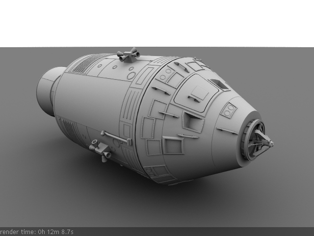
N/A DMC AA and Medium GI preset ( Max rate is -1)
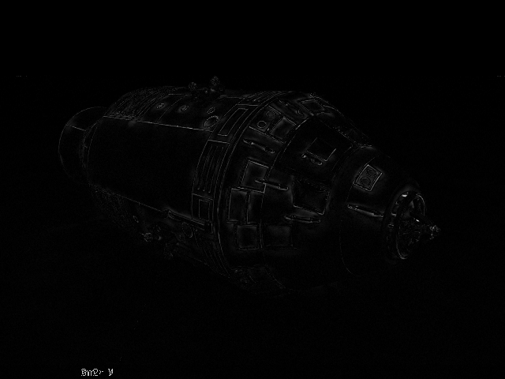
DMC AA and High GI preset
(Max rate
is 0)
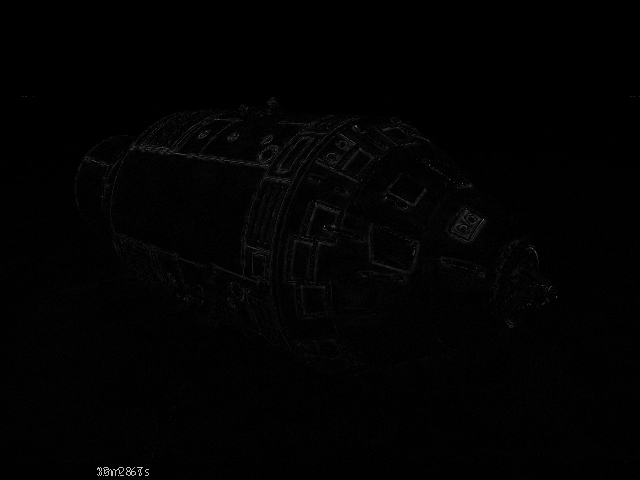 DMC AA and modified High GI preset ( Max rate is 1)
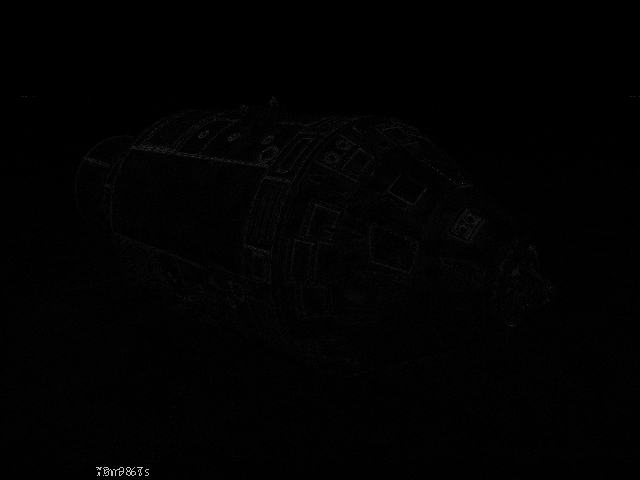 DMC AA and modified High GI preset ( Max rate is 2)
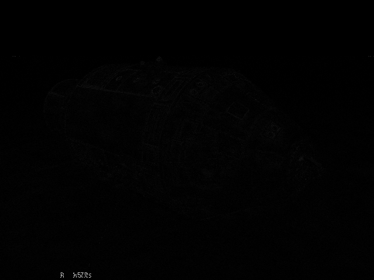
Color threshold (Clr thresh) - this parameter controls how sensitive the irradiance map algorithm is to changes in indirect lighting. Larger values mean less sensitivity; smaller values make the irradiance map more sensitive to light changes (thus producing higher quality images).
Normal threshold (Nrm thresh) - this parameter controls how sensitive the irradiance map is to changes in surface normals and small surface details. Larger values mean less sensitivity; smaller values make the irradiance map more sensitive to surface curvature and small details.
Distance threshold (Dist thresh) - this parameter controls how sensitive the irradiance map is to distance between surfaces. A value of 0.0 means the irradiance map will not depend on object proximity at all; higher values place more samples in places where objects are close to each other.
Hemispheric subdivs (HSph. subdivs) - this controls the quality of individual GI samples. Smaller values make things faster, but may produce blotchy results. Higher values produce smoother images. This is similar to the Subdivs parameter for direct computation. Note that this is not the actual number of rays that will be traced. The actual number of rays is proportional to the square of this value and also depends on the settings in the DMC sampler rollout.
Interpolation samples - this is the number of GI samples that will be used to interpolate the indirect illumination at a given point. Larger values tend to blur the detail in GI although the result will be smoother. Smaller values produce results with more detail, but may produce blotchiness if low Hemispheric subdivs are used. Note that if you use interpolated irradiance maps (i.e. the Mode is set to Animation (rendering)), V-Ray will actually multiply this value by the number of irradiance maps used. For example, if you have the Interpolation samples set to 20, and the Interpolation frames to 2, V-Ray will actually use 100 samples to interpolate. This is done in order to preserve the blurring of the GI solution compared to a single frame irradiance map, however it also slows down the rendering. To speed up the rendering in that case, you can decrease this value to 10 or 5.
Interpolation frames - this determines the number of frames that will be used to interpolate GI when the Mode is set to Animation (rendering). In this mode, V-Ray interpolates the irradiance from the maps of several adjacent frames to help smooth out any flickering. Note that the actual number of frames used is 2*(interp. frames)+1 (e.g. the default value of 2 means that in total 5 irradiance maps will be interpolated). Higher values slow down the rendering and may produce a "lagging" effect. Lower values render faster but may increase flickering. Note that increasing this value also increases the number of samples used for interpolation from the irradiance map - see the note for the Interpolation samples param eter.
Options
Show calc phase - when this option is on, V-Ray will show the irradiance map passes as the irradiance map is calculated. This will give you a rough idea of the indirect illumination even before the final rendering is complete. Note that turning this on slows the calculations a little bit, especially for large images. This option is ignored when rendering to fields - in that case, the calculation phase is never displayed.
Show direct light - this option is only available when Show calc phase is on. It will cause V-Ray to show direct lighting for primary diffuse bounces in addition to indirect lighting while the irradiance map is being calculated. Note that V-Ray does not really need to compute this. The option is only for convenience. This does not mean that direct lighting is not calculated at all - it is, but only for secondary diffuse bounces (only for GI purposes).
Show samples - when this option is on, V-Ray will show visually the samples in the irradiance map as small dots in the scene.
Use camera path - when this option is on, V-Ray will calculate the irradiance map samples for the entire camera path, instead of just the current view. This is useful in the following cases:
-
Calculating irradiance maps for short fly-through animations in one go. Instead of using the Incremental add to current map mode and rendering the animation every Nth frame, you can turn the Use camera path option on, and render just one single frame - this will produce information for the entire camera path.
-
Using irradiance maps for anmations with moving objects where the camera also moves - either in Single frame, or Animation (prepass) mode. In this case, setting the Use camera path option on wil l help to further reduce any flickering, as the GI sample positions on static geometry will not change.
If you use this option, you should not use interpolated glossy reflections/refractions in VRayMtl, as they will look odd.
Detail Enhancement
Detail enhancement is a method for bringing additional detail to the irradiance map in the case where there are small details in the image. Due to its limited resolution, the irradiance map typically blurs the GI in these areas or produces splotchy and flickering results. The detail enhancement option is a way to calculate those smaller details with a high-precision brute-force sampling method. This is similar to how an ambient occlusion pass works, but is more precise as it takes into account bounced light.
On - turns on detail enhancement for the irradiance map. Note that an irradiance map calculated in this mode should not be used without the detail option. When detail enhancement is On, you can use lower irradiance map settings and higher Interpolation samples. This is because the irradiance map is only used to capture the general far-off lighting, while direct sampling is used for the closer detail areas.
Scale - this determines the units for the Radius parameter:
-
Screen - the radius is in image pixels.
-
World - the radius is in world units.
Radius - this determines the radius for the detail enhancement effect. Smaller radius means that smaller parts around the details in the image are sampled with higher precision - this would be faster but may be less precise. Larger radius means that more of the scene will use the higher precision sampling and may be slower, but more precise. This is similar to a radius parameter for an ambient occlusion pass.
Subdivs mult. - this determines the number of samples taken for the high-precision sampling as a percentage of the irradiance map Hemispheric subdivs. A value of 1.0 means that the same number of subdivs will be used as for the regular irradiance map samples. Lower values will make the detail-enhanced areas more noisy, but faster to render.
Advanced Options
Interpolation type - this option is used during rendering. It selects the method for interpolating the GI value from the samples in the irradiance map.
-
Weighted average - this method will do a simple blend between the GI samples in the irradiance map based on the distance to the point of interpolation and the difference in the normals. While simple and fast, this method tends to produce a blotchiness in the result.
-
Least squares fit - the default method; it will try to compute a GI value that best fits in among the samples from the irradiance map. Produces smoother results than the weighted average method, but is slower. Also, ringing artifacts may appear in places where both the contrast and density of the irradiance map samples change over a small area.
-
Delone triangulation - all other methods of interpolation are blurry methods - that is, they will tend to blur the details in indirect illumination. Also, the blurry methods are prone to density bias (see below for a description). In difference, the Delone triangulation method is a non-blurry method and will preserve the detail while avoiding density bias. Since it is non-blurry, the result might look more noisy (blurring tends to hide noise). More samples will be needed to get a sufficiently smooth result. This can be done either by increasing the hemispheric subdivs of the irradiance map samples, or by decreasing the Noise threshold value in the brute force sampler rollout.
Example: The Delone Triangulation Method
This example shows the triangles used by the Delone triangulation method to interpolate samples in the irradiance map. Note that the triangles are constructed on the fly from the irradiance samples; no actual mesh is ever created. The vertices of the shown triangles correspond to samples in the irradiance map.
On-the-fly Delone Triangulation
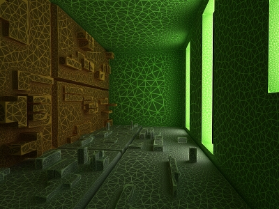
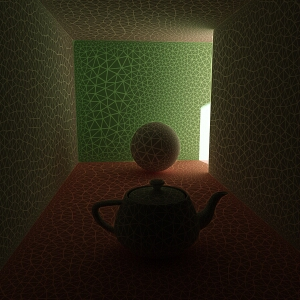
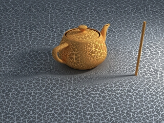
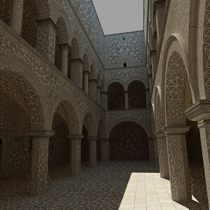
Interpolated result
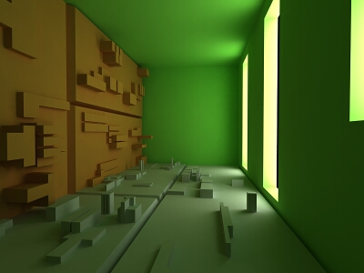
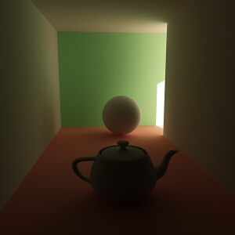
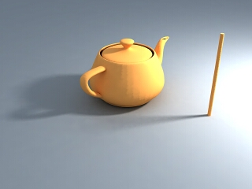
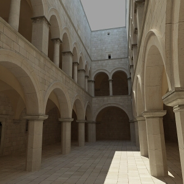
-
Least squares with Voronoi weights - this is a modification of the least squares fit method aimed at avoiding the ringing at sharp boundaries by taking in consideration the density of the samples in the irradiance map. The method is quite slow and its effectiveness is currently somewhat questionable.
Although all interpolation types have their uses, it probably makes most sense to use either Least squares fit or Delone triangulation. Being a blurry method, Least squares fit will hide noise and will produce a smooth result. It is perfect for scenes with large smooth surfaces. Delone triangulation is a more exact method, which usually requires more hemispheric subdivs and high Max irradiance map rate (and therefore more rendering time), but produces accurate results without blurring. This is especially obvious in scenes where there are a lot of small details.
Example: Interpolation Methods
The following examples shows the main differences between a blurry interpolation method (Least squares fit) and a non-blurry one (Delone triangulation). Notice how the images in the first column are more blurry, while the images in the second column are sharper.
|
Comment |
Blurry method (Least squares fit) |
Non-blurry method (Delone triangulation) |
|
The scene is a simple cube on a sphere as seen from above, lit by a HDRI map. Low hemispheric subdivs and low irradiance map rates were used intentionally so that the difference is more obvious. Both images were rendered with exactly the same irradiance map. |
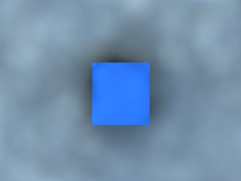 |
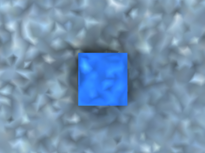 |
|
This scene shows the ability of the Delone triangulation method to preserve detail. Notice that the shadows in the right image are sharper. Both images used the same irradiance map. |
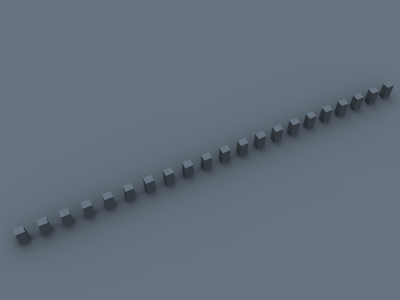 |
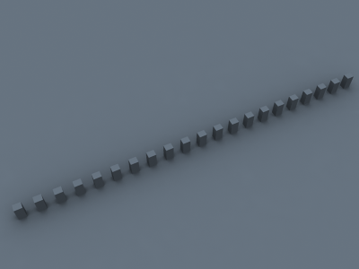 |
|
A close-up of the previous scene. The irradiance map is exactly the same as for the two previous images (it was saved and then loaded from disk). |
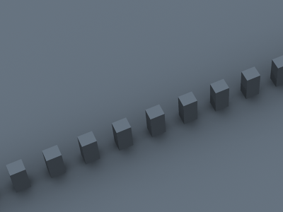 |
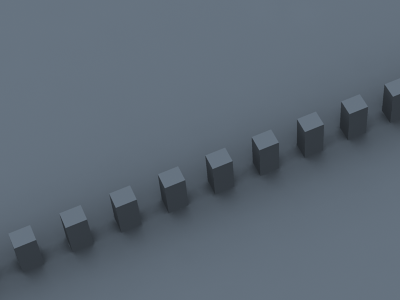 |
Sample lookup - this option is used during rendering. It selects the method of choosing suitable points from the irradiance map to be used as basis for the interpolation.
-
Nearest - this method will simply choose those samples from the irradiance map which are closest to the point of interpolation. (How many points will be chosen is determined by the value of the Interpolation samples pa rameter.) This is the fastest lookup method and was the only one available in early versions of V-Ray. A drawback of this method is that in places where the density of the samples in the irradiance map changes, it will pick more samples from the area with higher density. When a blurry interpolation method is used, this leads to the so-called density bias which may lead to incorrect interpolation and aritfacts in such places (mostly GI shadow boundaries).
-
Nearest quad-balanced - this is an extension of the nearest lookup method aimed at avoiding density bias. It divides the space about the interpolated point in four areas and tries to find an equal number of samples in all of them (hence the name quad-balanced). The method is a little slower than the simple Nearest lookup, but in general performs very well. A drawback is that sometimes, in its attempt to find samples, it may pick samples that are far away and not relevant to the interpolated point.
-
Precalculated overlapping - this method was introduced in an attempt to avoid the drawbacks of the two previous ones. It requires a preprocessing step of the samples in the irradiance map during which a radius of influence is computed for each sample. This radius is larger for samples in places of low density, and smaller for places of higher density. When interpolating the irradiance at a point, the method will choose every sample that contains that point within its radius of influence. An advantage of this method is that when used with a blurry interpolation method it produces a continuous (smooth) function. Even though the method requires a preprocessing step, it is often faster than the other two. These two properties make it ideal for high-quality results. A drawback of this method is that sometimes lonely samples that are far-away can influence the wrong part of the scene. Also, it tends to blur the GI solution more than the other methods.
-
Density-based - the default method; it combines the Nearest and the Precalculated overlapping methods and is very effective in reducing ringing artifacts and artifacts due to low sampling rates. This method also requires a preprocessing step in order to compute sample density, but it performs a nearest neighbor look-up to choose the most suitable samples while taking sample density in account.
Example: Sample Look-up
The following examples show the differences between the three sample lookup methods and more specifically, their behavior in areas with changing sample density.
This is the test scene, the left image shows the final image and the right image shows the samples in the irradiance map (it was rendered with the Show samples option checked). The scene itself is a sphere on a plane, lit by a V-Ray area light and a little skylight. The area light had the option Store with irradiance map checked.

Test scene
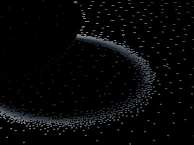
The samples in the irradiance map
As one will notice, the density of the samples is quite different in the uniformly lit areas and in the shadow transition area. The following three images used exactly the same irradiance map with the Least squares fit interpolation method.
Nearest lookup method
Nearest quad-balanced lookup method
 Precalculated overlapped method
Precalculated overlapped method
You can see the ringing artifacts (the white halo around the shadow) caused by the different sample density in the first two images. The last image, rendered with the Precalculated overlapping method is free from those artifacts. It also rendered faster than the other two images.
As a comparison, here is the same image rendered with the Delone triangulation interpolation method.
Nearest lookup method
Nearest quad-balanced lookup method
Precalculated overlapped method
The images are nearly identical. This is because the Delone triangulation method, being a non-blurry method, is less sensitive to the samples that are being looked up, so long as the delone trianglulation can be performed successfully from them.
Being the fastest of the three methods, Nearest lookup may be used for preview purposes. Nearest quad-balanced performs fairly well in the majority of cases. Precalculated overlapping is fast and in many cases performs very well, but may tend to blur the GI solution. The Density-based method produces very good results in the majority of cases and is the default method.
Note that the lookup method is mostly important when using a blurry interpolation method. When using Delone triangulation, the sample lookup method does not influence the result very much.
Calc. pass interpolation samples - this is used during irradiance map calculation. It represents the number of already computed samples that will be used to guide the sampling algorithm. Good values are between 10 and 25. Low values may speed the calculation pass, but may not provide sufficient information. Higher values will be slower and will cause additional sampling. In general, this parameter should be left to the default value of 15.
Multipass - when this is turned on, V-Ray will make several passes through the image with progressively finer resolutions, starting with the Min rate and working up towards the Max rate. This typically gives a better sample distribution in the irradiance map and also gives an early preview of the scene. When this is off, V-Ray makes just one pass with the specified Max rate, which is slightly faster, but may produce samples that are aligned in a straight line around the edges of the render regions.
Randomize samples - this is used during irradiance map calculation. When it is checked, the image samples will be randomly jittered. Unchecking it will produce samples that are aligned in a grid on the screen. In general, this option should be kept checked in order to avoid artifacts caused by regular sampling.
Check sample visibility - th is is used during rendering. It will cause V-Ray to use only those samples from the irradiance map, which are directly visible from the interpolated point. This may be useful for preventing "light leaks" through thin walls with very different illumination on both sides. However it will also slow the rendering, since V-Ray will trace additional rays to determine sample visibility.
Example: Check Sample Visibility
The following examples demonstrate the effect of the Check sample visibility parameter. The scene is a thin wall lit on the two sides by two V-Ray area lights with different color. Both lights had the Store with irradiance map option checked. The two images are rendered with the Medium irradiance map preset
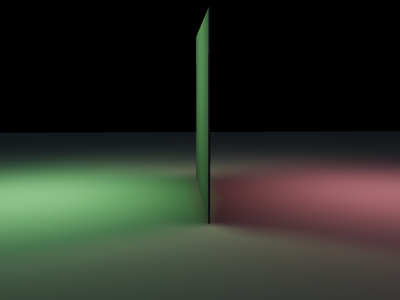 Check sample visibility is off
Check sample visibility is on
Notice the light leak in the first image. This happens because near the thin wall V-Ray will use samples from both the sides. When Check sample visibility is turned on, V-Ray will discard the samples from the wrong side.
As a comparison, here is the same image rendered with the High irradiance map preset and Check sample visibility turned off.
High irradiance map preset, Least squares fit
High irradiance map preset, Delone triangulation
The light leak effect is negligible in the left image and completely absent in the right one. This is because the High irradiance map preset will cause V-Ray to take additional samples at the base of the thin wall, thus decreasing the leaking effect. Using a non-blurry interpolation method (Delone triangulation) further limits this effect.
The conclusion is that turning on Check sample visibility is only useful for low irradiance map settings. Also note that this option may not work very well for curved objects.
Mode
Mode - this groups of controls allow the user to select the way the irradiance map is (re)used.
-
Bucket mode - in this mode, a separate irradiance map is used for each rendered region ("bucket"). Note that since each bucket is computed independently of the others, there may be differences at the bucket edges. They can be reduced by using higher settings for the irradiance map (the High preset, more hemispheric subdivs, and/or smaller Noise threshold for the DMC sampler).
-
Single frame - the default mode; a single irradiance map is computed for the whole image, and a new irradiance map is computed for each frame. This is the mode to use when rendering animations of moving objects. In doing so, one must make sure that the irradiance map is of sufficiently high quality to avoid flickering.
-
Multiframe incremental - this mode is useful when rendering a sequence of frames (not necessarily consecutive) where only the camera moves around (so-called fly-through animations). V-Ray will compute a new full-image irradiance map for the first rendered frame; for all other frames V-Ray will try to reuse and refine the irradiance map that has been computed so far.
-
From file - in this mode, V-Ray will simply load the irradiance map from the supplied file at the start of the rendering sequence and will use this map for all the frames in the animation. No new irradiance map will be computed. This mode can be used for fly-through animations and will work well in network rendering mode.
-
Add to current map - in this mode, V-Ray will compute a completely new irradiance map and will add it to the map that is already in memory. This mode is useful when compiling an irradiance map to render multiple views of a static scene. Note that this mode is not supported for distributed rendering.
-
Incremental add to current map - in this mode, V-Ray will use the irradiance map that is already in memory and will only refine it in places that don't have enough detail. This mode is useful when compiling an irradiance map to render multiple views of a static scene or a fly-through animation.
-
Animation (prepass) - in this mode, V-Ray calculates irradiance maps to be used later on for final rendering with the Animation (rendering) mode. One irradiance map is created for each frame and written into a separate file. Note that in this mode you have to render one map for each frame (i.e. you cannot render every Nth frame). V-Ray automatically disables rendering of the final image in this mode - only irradiance map prepasses are calculated.
-
Animation (rendering) - in this mode, V-Ray renders a final animation using irradiance maps created with the Animation (prepass) mode. Irradiance maps from several adjacent frames are loaded together and blended so as to reduce flickering. The number of irradiance maps that are interpolated is determined by the Interp. frames parameter.
The irradiance map mode that should be used depends on the particular rendering task - a static scene, a static scene rendered from multiple views, a fly-through animation, or an animation with moving objects. Refer to the tutorials section for more information.
Irradiance Map Control Buttons
There are some more buttons in this group that allow one to perform certain operations on the irradiance map:
Browse - this button allows the user to select the irradiance map file which will be loaded if the From file mode is selected. Alternatively, the user can enter the path and name of the file directly in the edit box.
Save to file - this will save to file the irradiance map which is currently in memory. Note that the Don't delete option in the On render end group must be turned on. Otherwise V-Ray will automatically delete the irradiance map at the end of the rendering process.
Reset irradiance map - this will clear the irradiance map from memory.
On Render End
This group of controls instructs V-Ray what to do with the irradiance map at the end of the rendering process.
Don't delete - the default for this option is on, which means that V-Ray will keep the irradiance map in memory until the next rendering. If this option is cleared, V-Ray will delete the irradiance map when rendering is complete. This means that you will not be able to save the map manually afterwards.
Auto save - if this option is set, V-Ray will automatically save the irradiance map to the specified file at the end of the rendering. This mode is particularly useful if you want to send the irradiance map for rendering on a different machine through network rendering.
Switch to saved map - this option is only available if the Auto save option is turned on. If Switch to saved map is on, then V-Ray will also automatically set the irradiance map mode to From file and will set the file name to be that of the map that was just saved.
Notes
-
You can view, merge and save irradiance maps with the irradiance map viewer tool.
-
For animated irradiance maps, GI samples on different objects are not shared; this may lead to small objects to appear black in the final renders. To solve this issue, group those objects together - this will work as GI samples are shared for objects which are part of the same group.